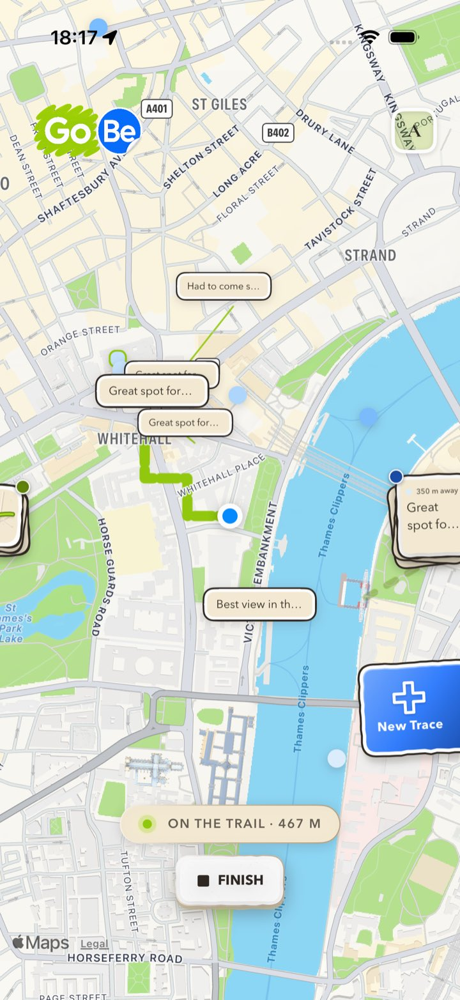
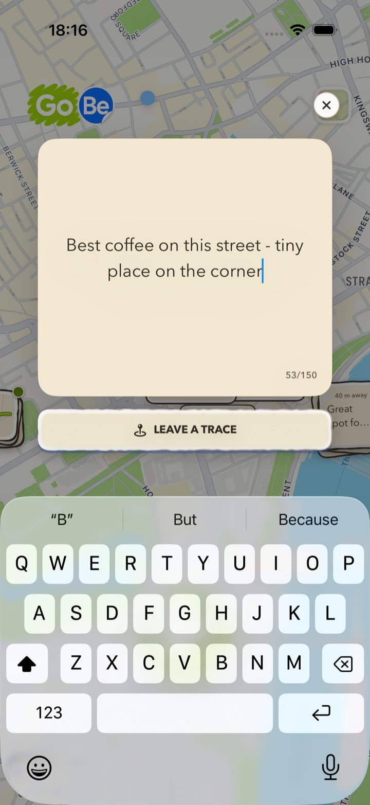
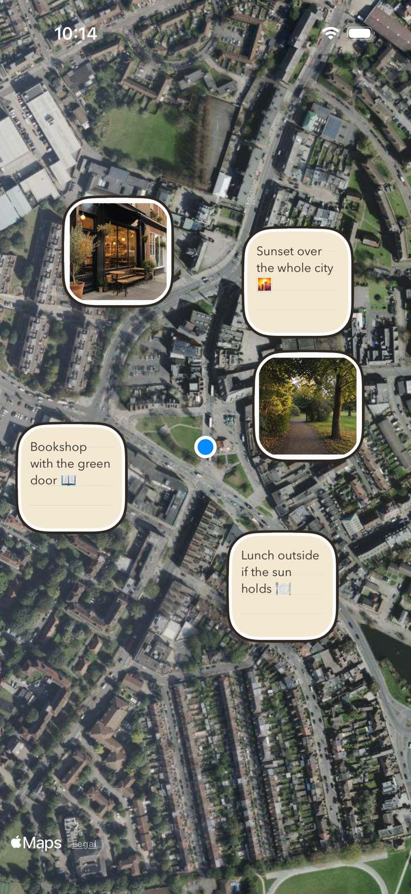
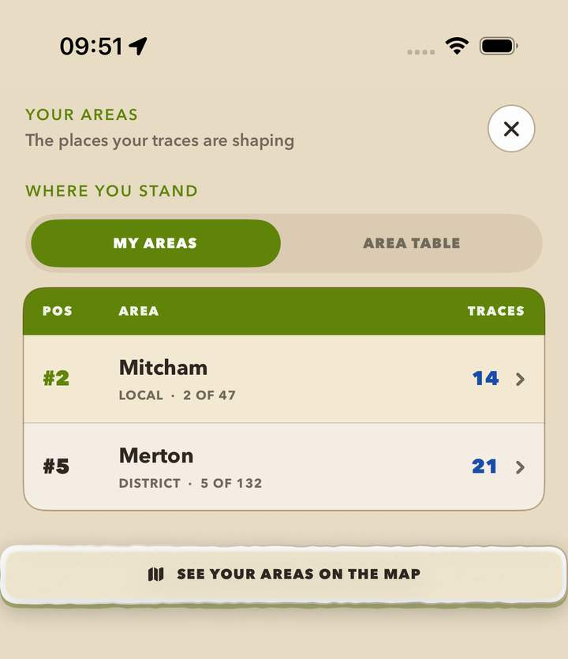

A local social network
The social network on a map, not in a feed.
GoBe helps you meet people and enjoy experiences local to you, offline. People record their everyday journeys as trails and leave location-pinned posts, called traces, for others to discover where they were created.
Free for iPhone · Made in the UK · For ages 16+

The whole idea
As trails overlap, GoBe reveals the people whose lives cross the same streets.
Three moves, and that is the whole app.
No ranking, no recommendations, no infinite scroll. Where you went, what you left, and who else has been there.
Walk your day
Press play and GoBe quietly records the route you take as a trail. When you finish you keep the line you walked, how far you went and how long you were outside.
Leave a trace
A trace is a post pinned to the spot it belongs to: a note, a photo, a video, or nothing at all. An empty trace still says the truest thing there is, that you were here.
Be found there
Traces stay where they were made. They are read by whoever gets to that spot, which means the only way to reach one another is to actually turn up.
Your day, kept as a line on the map.
A trail is a record of somewhere you actually went, not a post about it. Trails are private to you by default, and what they are for is what happens when they overlap.


Trails
Recorded while you walk, kept when you stop.
GoBe follows the route in the background while a trail is running, up to twelve hours, and stops the moment you finish. What you get back is a keepsake of the day: the shape of the walk, the distance, the time you spent outside and every trace you left, in order.
Turn location off part way through and the trail is discarded rather than half kept. It is a record of a real journey or it is nothing.


Traces
Something small, left where it happened.
Tap a trace to read it, like it, or retrace it onto your own map. Reach one in person and you can pass it, which records that you made it to the same place rather than posting a copy of somebody else's moment.
Your neighbourhood, described by the people who walk it, in the spots they were describing.
Then the map starts introducing you.
This is the part a feed cannot do. Geography, not an algorithm, decides who you meet.

People, places, communities
The people whose lives cross the same streets.
Everyone whose traces are within reach of you is somebody who has been standing where you are standing. GoBe can also notice when another person has walked a street you walked, and tell you both, if you have each chosen to be told.
Alongside them sits what is actually around you: places to eat, drink, read, train, shop and do something, so the map answers the ordinary question of what to do this afternoon as well as the bigger one of who is out there.
Every trace adds up to somewhere.
A trail travelled and a trace left are not just yours. They are a contribution to the life of a neighbourhood, a borough and a city, which is the reason to keep participating in the place you already live.

Neighbourhood, borough, city
The same walking, counted at every scale it belongs to. Not a score for its own sake: a way of showing that turning up in your own area is worth something, and that the map of a place is built by the people who live in it.
A feed
Rewards attention
- Ranked by an algorithm optimising for time spent
- Everybody's content, from everywhere, all at once
- The best outcome is that you keep scrolling
- Ends on the screen
GoBe
Rewards turning up
- Arranged by geography, so distance decides what you see
- What was left here, found by whoever gets here
- The best outcome is that you go somewhere
- Ends outside, in your own area, with people from it
Built so that being outside stays safe.
A social network made of real places only works if it never becomes a way to find a person at one.

Privacy
Your map, not your whereabouts.
Traces are saved to an approximate spot, rounded to a grid roughly thirty metres across, and the exact coordinate is never stored, on your device or on our servers. The route of a trail is more detailed, and that is exactly why a trail stays private to you.
Mark protected areas such as home or work and GoBe refuses to place a trace inside them. Those areas are kept on your device only. No ads, and we never sell your data.
Nothing following you around. GoBe is not built on attention.
We never sell it. Delete your account and content any time.
A small, independent app, built with care in Britain.
Higher-privacy defaults for younger users, by design.
Reading this as a business?
The short version.
Social networks have spent fifteen years getting better at holding people in a feed and worse at getting them into a room. GoBe puts the network back on the ground: the unit of content is a place you stood in, the unit of distribution is how near you are to it, and the success condition is that somebody leaves the house.
That geography is also the moat. A map filled in by the people who walk a neighbourhood cannot be bought or scraped into existence somewhere else, and it gets more useful to everybody in that neighbourhood with each trace left in it. GoBe grows the way a place does, street by street, rather than all at once and everywhere.
Investors, partners and press: contact@gobeapp.co.uk
Go be somewhere.
GoBe is free on the App Store, for iPhone. Here is everything about how it works and how we look after your data.